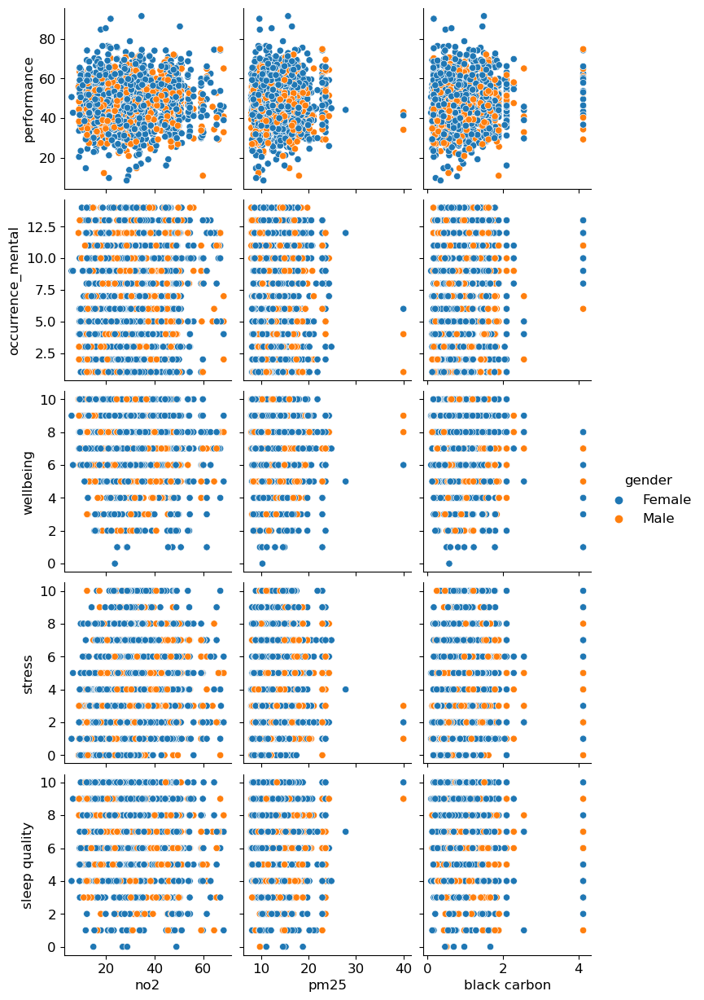
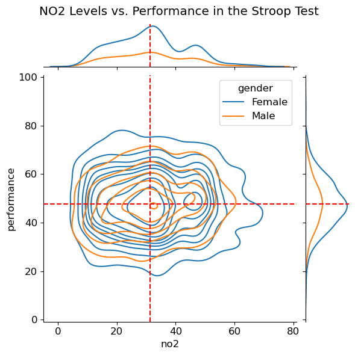
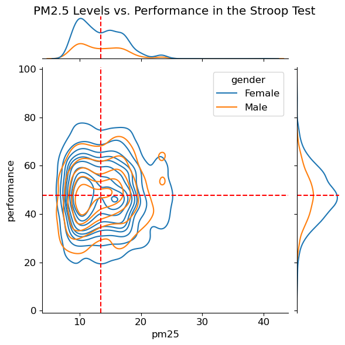
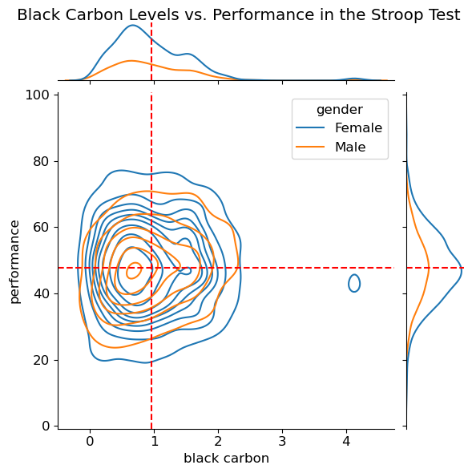

Pollutants and Performance#
Explore the relationship between environmental factors and human health
import numpy as np
import pandas as pd
import matplotlib.pyplot as plt
import seaborn as sns
plt.rcParams['figure.figsize'] = (5, 8)
plt.rcParams['font.size'] = 12
health_clean = pd.read_csv('data/CitieSHealth_BCN_DATA_PanelStudy_20220414_Clean.csv')
health_clean.head()
| no2 | pm25 | black carbon | performance | occurrence_mental | wellbeing | stress | sleep quality | gender | diet | alcohol | drug_use | education | access_greenbluespaces | smoke | age | |
|---|---|---|---|---|---|---|---|---|---|---|---|---|---|---|---|---|
| 0 | 28.54 | 8.16 | 0.50 | 51.24 | 2 | 8 | 5 | 8 | Female | Yes | No | No | university | Yes | No | 37 |
| 1 | 44.51 | 13.38 | 1.51 | 56.01 | 10 | 9 | 8 | 9 | Female | Yes | Yes | No | university | Yes | Yes | 28 |
| 2 | 33.81 | 16.53 | 1.17 | 58.18 | 14 | 3 | 5 | 2 | Female | Yes | No | No | university | Yes | No | 29 |
| 3 | 37.86 | 15.67 | 1.21 | 71.48 | 12 | 9 | 6 | 2 | Female | No | Yes | No | university | Yes | No | 33 |
| 4 | 37.82 | 18.45 | 1.56 | 46.05 | 9 | 3 | 5 | 10 | Female | Yes | Yes | No | baccalaureate | No | No | 45 |
sns.pairplot(health_clean,
x_vars=['no2','pm25', 'black carbon'], # env factors
y_vars=['performance', 'occurrence_mental', 'wellbeing', 'stress', 'sleep quality'],
hue='gender') # wellbeing measurements
plt.savefig('outputs/pollutants_vs_health')

p=sns.jointplot(data = health_clean, x = 'no2', y = 'performance',kind = 'kde', hue='gender')
p.refline(x=health_clean['no2'].mean(), y=health_clean['performance'].mean(), color='r')
p.fig.suptitle("NO2 Levels vs. Performance in the Stroop Test")
p.fig.subplots_adjust(top=0.93)
plt.savefig('outputs/no2_vs_performance')

g=sns.jointplot(data = health_clean, x = 'pm25', y = 'performance', kind = 'kde', hue='gender')
g.refline(x=health_clean['pm25'].mean(), y=health_clean['performance'].mean(), color='r')
g.fig.suptitle("PM2.5 Levels vs. Performance in the Stroop Test")
g.fig.subplots_adjust(top=0.95)
plt.savefig('outputs/pm25_vs_performance')

h=sns.jointplot(data = health_clean, x = 'black carbon', y = 'performance', kind = 'kde', hue='gender')
h.refline(x=health_clean['black carbon'].mean(), y=health_clean['performance'].mean(), color='r')
h.fig.suptitle("Black Carbon Levels vs. Performance in the Stroop Test")
h.fig.subplots_adjust(top=0.95)
plt.savefig('outputs/blackcarbon_vs_performance')
